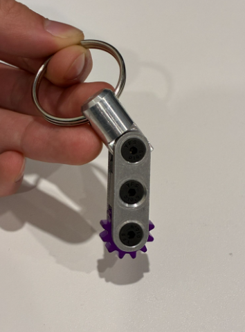

I’m a Mechanical Engineering student at the University of Waterloo with hands-on experience in mechanical design, fabrication, and product development, from parametric CAD, 3D printing, and machining to DFM, GD&T drawings, and product testing. I like problems where the answer has to exist in the real world, with parts that fit, mechanisms that move, and data that says whether it worked.
- President’s Scholarship of Distinction ($5k), >95% admission average
- Peter C. Masak Memorial Scholarship ($4k), Outstanding Mechanical Engineering Student
Autonomous Cookie Icing Machine


Our assignment was to build a mechanical project from set quantities of VEX IQ, 3D-printed, and laser-cut parts. We challenged ourselves to build and program a machine that applies a user-designed, multicolor icing pattern to a cookie in under four minutes.
I modelled the gantry and dispenser in SolidWorks and led fabrication of the printed motor housings and gantry, plus the laser-cut acrylic racks, baseplate, and enclosure. When a motor shortage threatened accuracy, I moved the cookie baseplate instead of the nozzle. Testing informed plunger logic that prevents trapped-air and icing-pooling failures.
The machine met every specification. Iterative testing taught me how critical sensor calibration is when real sensors behave differently from their datasheets.

Mechanical Thumb Toy “Digit”
Design and build a mechanically actuated extra thumb for the ME100 final, from CAD through prototype testing.

I designed the hand mount and elastic return mechanism. Testing showed that my first thumb-slide and string control occupied the user’s thumb, defeating the goal of an extra finger. I switched to wrist-based actuation, freeing all five fingers while keeping Digit under control.
Digit met its 30 N grip-force target and actuated in under a second. The professor kept the prototype for future students. I learned to link independent mechanisms to specific hand movements without accidental actuation.
If playback is unavailable, watch the demo on YouTube ↗.
Solar Car Canopy Design
Develop a solar-car canopy for the University of Waterloo Midnight Sun team, balancing aerodynamic shape with driver visibility.

I modelled the canopy in SolidWorks, learning surface modelling, lofting, and split-line tools to create its aerodynamic form.
Team leads approved the design. The project taught me to balance drag reduction, driver visibility, and vehicle packaging.

Spur Gear Keychain


Design and fabricate a custom keychain with a freely revolving spur gear.
I modelled the assembly in SolidWorks, then machined and assembled it with a lathe, 3-axis mill, drill press, and tap.

The finished aluminum keychain was machined in under an hour. I strengthened my machining, shop-safety, and assembly-modelling skills.